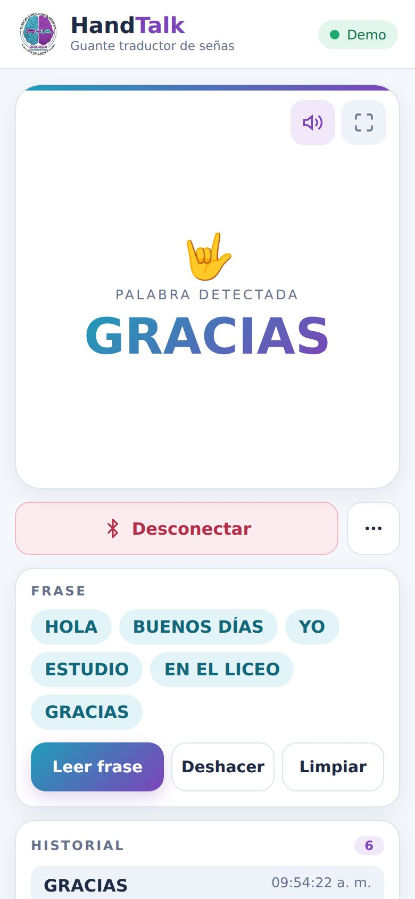
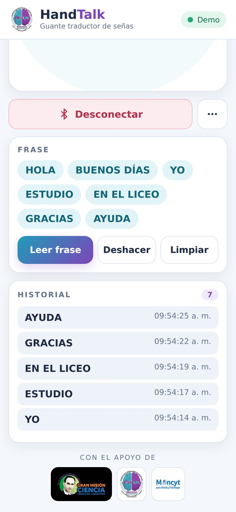
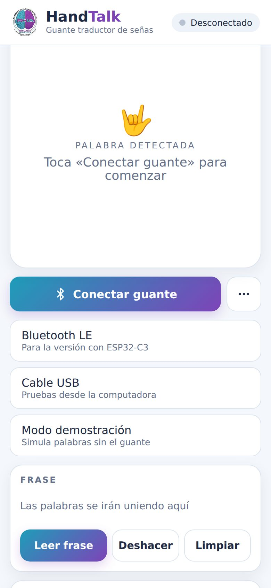

Un guante con sensores reconoce las señas y envía la palabra por Bluetooth al teléfono. Esta app la muestra en grande y la lee en voz alta, para que cualquiera pueda entender.
Gratis. Sin registro. Funciona en Android con Google Chrome.

De la seña a la voz en menos de un segundo.
Cada seña aparece en el centro de la pantalla con letras grandes, fáciles de leer desde lejos.
El teléfono lee cada palabra en voz alta. Se apaga con el botón de la bocina.
Las palabras se van juntando en una frase que se puede leer completa, corregir o borrar.
Pantalla completa para proyectar, y un modo demostración que simula palabras si el guante no está a mano.
Colores claros, botones grandes y letras gordas. Pensada para usarse en el teléfono, con una mano.


Se hace una sola vez el emparejamiento; después basta con tocar un botón.
No hace falta para usarla, pero si la instalas te queda con su icono en la pantalla de inicio, se abre sin barra del navegador y arranca aunque no haya internet.
Abre Abrir la app en Chrome, toca los tres puntitos de arriba a la derecha y escoge Instalar app o Agregar a pantalla principal. Listo.
Abre Abrir la app en Safari, toca el botón de compartir —el cuadrito con la flecha— y escoge Agregar a inicio. Recuerda que en iPhone no conecta con el guante.
Ábrela en Chrome o Edge. Con el guante conectado por cable USB sirve para probar el código de la placa sin usar el teléfono.
La app es una página web instalable: todo está en un solo archivo, app/index.html. No usa servidores ni bases de datos, y no guarda nada de nadie; las palabras solo viven en la pantalla mientras está abierta.
Está publicada gratis en Cloudflare Pages, conectada a un repositorio de GitHub. Cada vez que se sube un cambio al repositorio, la página se actualiza sola en uno o dos minutos, y los teléfonos que la tienen instalada reciben la versión nueva la próxima vez que la abren.
El guante solo tiene que enviar cada palabra terminada en salto de línea, por ejemplo SerialBT.println("HOLA");. La app se conecta por Bluetooth clásico (ESP32), Bluetooth LE (ESP32-C3) o cable USB.
Proyecto de la Brigada Tecnológica de Robótica e Inteligencia Artificial del Liceo Caracciolo Parra y Olmedo.
Se abre y ya está. No hay que instalar nada para usarla.